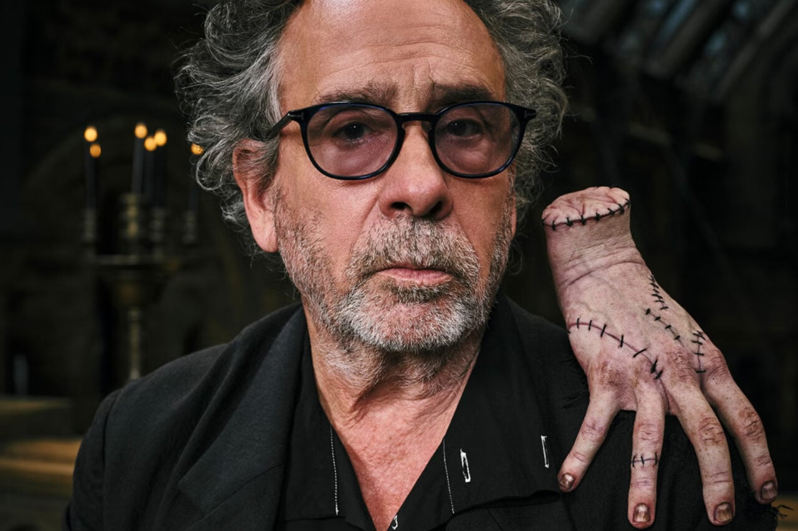

Биография Тима Бертена
Биография

Тимоти Уолтер Бертон родился 25 августа 1958 года в Бербанке, Калифорния, рядом с Голливудом. В детстве он был замкнутым ребёнком. Много рисовал, смотрел малобюджетные фильмы ужасов и обожал Винсента Прайса и Эдгара По.Бертон учился в Калифорнийском институте искусств (CalArts) и попал на студию Disney как аниматор. Работа над «Лисом и охотничьим псом» и «Чёрным котлом» оказалась для него неудачной: стиль не вписывался в диснеевские стандарты. Зато в этот период появились его первые короткометражки: «Винсент» (1982) и «Франкенвини» (1984). Они привлекли к нему внимание Голливуда.
Полнометражный дебют, комедия «Приключения Пи-Ви» (1985), стал успешным. Вскоре вышли «Битлджус» (1988) и «Бэтмен» (1989), и Бертон занял место среди самых заметных режиссёров своего поколения.
Фирменный стиль
Фильмы Бертона узнаются с первого кадра. Критики даже придумали слово «бертоновский» (Burtonesque).
- Готическая сказка. Мрачные замки, кривые деревья, туманные городки, всё это смешано с детской наивностью и чёрным юмором.
- Герои-изгои. Эдвард Руки-ножницы, Эд Вуд, Бэтмен, Суини Тодд, Алиса. Все они не такие, как остальные. Бертон снимает кино о тех, кого общество не принимает, и показывает, что именно «странные» часто оказываются самыми человечными.
- Визуальный язык. Контрастные чёрно-белые полосы и спирали, бледные лица с тёмными кругами у глаз, искажённые пропорции. Всё это пришло из его рисунков.
- Музыка. Почти все его фильмы звучат голосом композитора Дэнни Эльфмана. Их союз длится с 1985 года.
- Команда. Бертон часто
работает с одними и теми же
актёрами:
- Джонни Депп, восемь фильмов, от «Эдварда Руки-ножницы» до «Суини Тодда»
- Хелена Бонем Картер
- Вайнона Райдер
- Майкл Китон
- Техника. Бертон любит кукольную анимацию (stop-motion) и практические эффекты: костюмы, гримы, декорации.
Ключевые работы
| Год | Фильм | Чем известен |
|---|---|---|
| Битлджус | Культовая комедия о призраках, шумный дебют бертоновского стиля | |
| Бэтмен | Тёмный супергеройский фильм, изменивший жанр | |
| Эдвард Руки-ножницы | Самая личная сказка Бертона, первая работа с Джонни Деппом | |
| Бэтмен возвращается | Ещё более мрачное продолжение с Пингвином и Женщиной-кошкой | |
| Кошмар перед Рождеством | Кукольный мюзикл по идее и персонажам Бертона (режиссёр: Генри Селик) | |
| Эд Вуд | Нежная биография «худшего режиссёра в мире» | |
| Сонная Лощина | Готический детектив с Деппом и Кристиной Риччи | |
| Большая рыба | Трогательная история об отце, сыне и силе вымысла | |
| Труп невесты | Кукольная анимация, номинация на «Оскар» | |
| Чарли и шоколадная фабрика | Экранизация Роальда Даля | |
| Суини Тодд | Мюзикл-хоррор, «Золотой глобус» как лучший фильм (комедия или мюзикл) | |
| Алиса в Стране чудес | Касса более $1 млрд | |
| Франкенвини | Чёрно-белая кукольная анимация, номинация на «Оскар» | |
| Большие глаза | Драма о художнице Маргарет Кин | |
| Венсдей | Сериал о Уэнсдей Аддамс, один из главных хитов платформы | |
| Битлджус Битлджус | Возвращение Майкла Китона, открытие Венецианского кинофестиваля |
Наследие и сегодня
*Нажми или наведи курсор на карточку и она остановится
-
Не только кино
Бертон выпустил сборник стихов с иллюстрациями «Грустная смерть Устричного мальчика» ( ), рисует и занимается дизайном. Его работам посвящены выставки: в году в нью-йоркском MoMA, в году в лондонском Музее дизайна (The World of Tim Burton).
-
Влияние
Бертон научил массовую аудиторию любить готику, чёрный юмор и «нестандартных» героев. Без него трудно представить эстетику субкультур, моды, клипов, игр и современных сериалов в тёмном стиле. Он продолжает работать и в большом кино, и на стриминге.
-
Что дальше
По сообщениям отраслевых изданий ( ), Бертон работает над оригинальным фильмом, действие которого происходит в послевоенной Японии. Сценарий пишет нобелевский лауреат Кадзуо Исигуро. Подробности пока держатся в секрете.